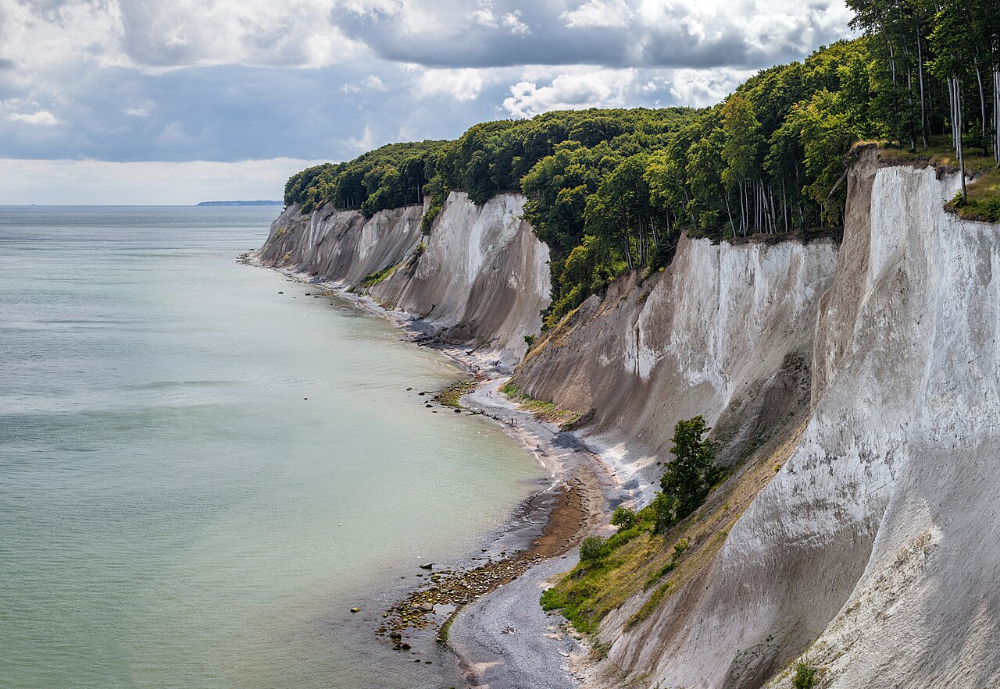
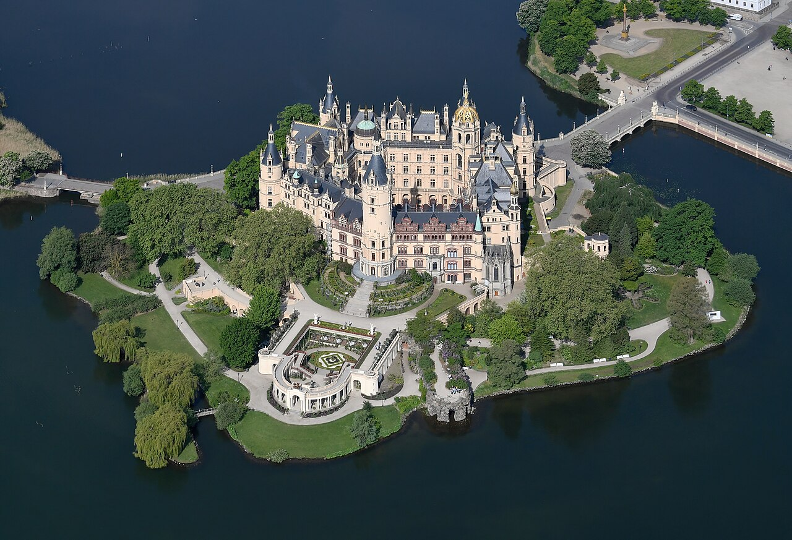
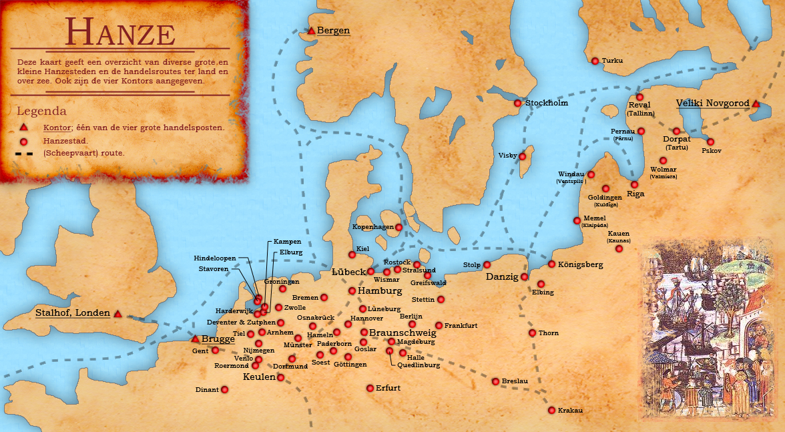
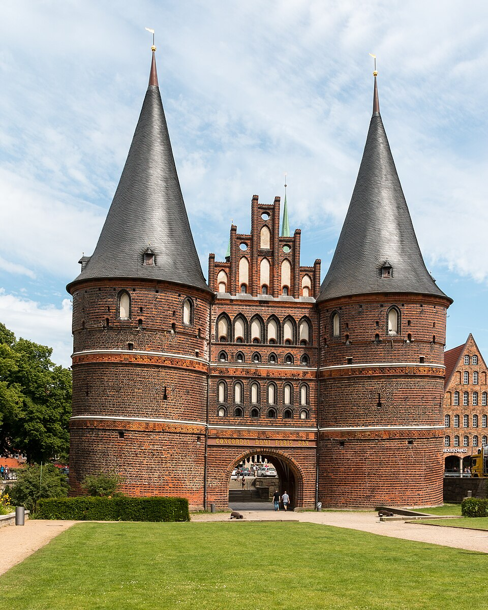
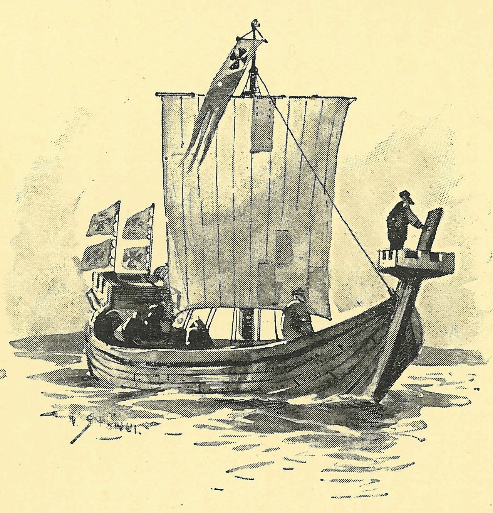
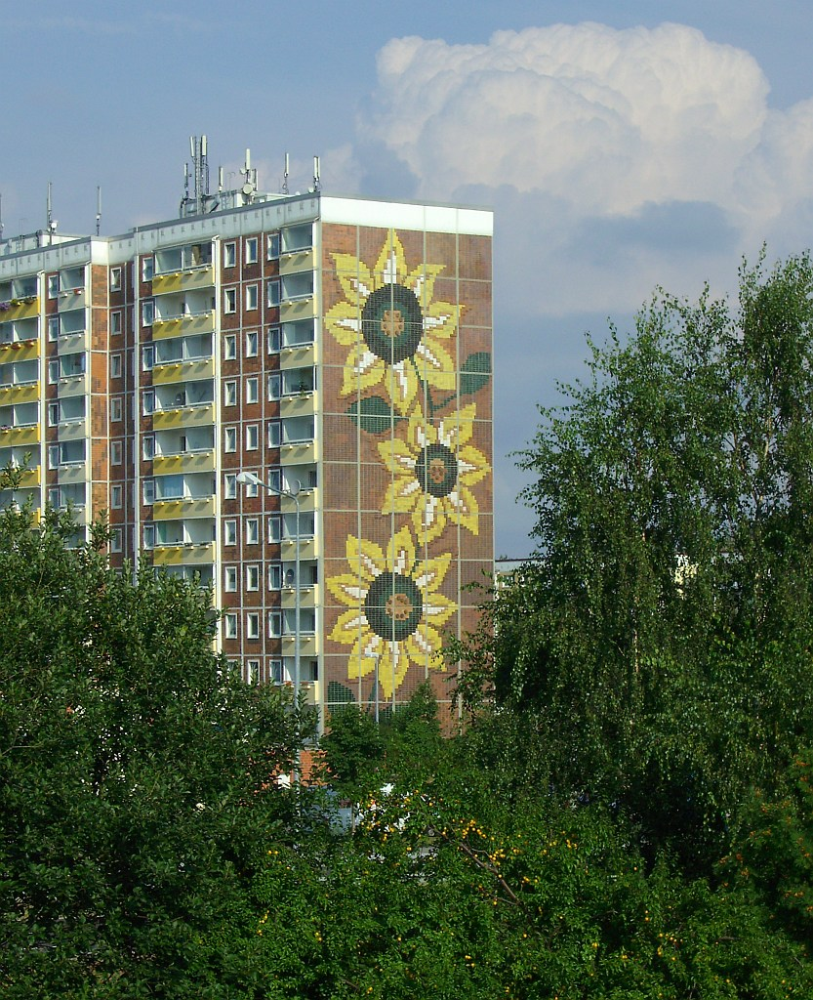
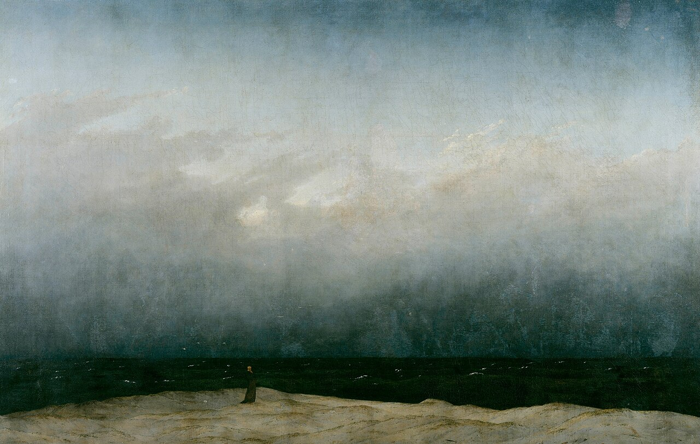
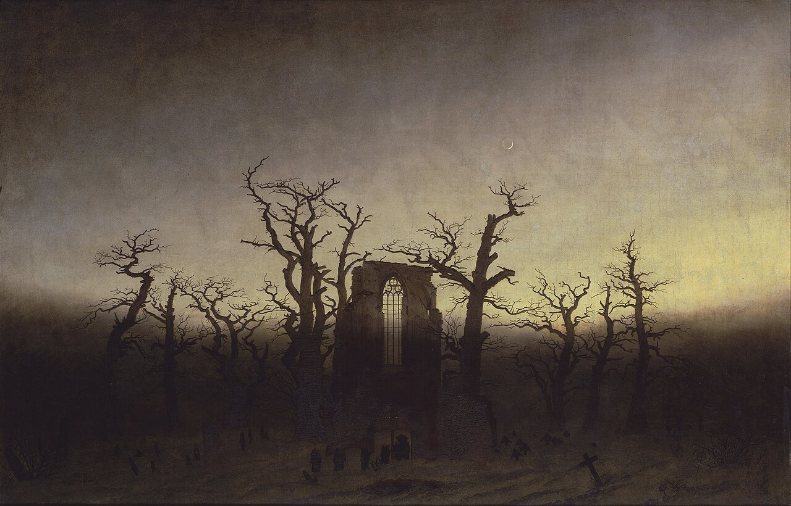
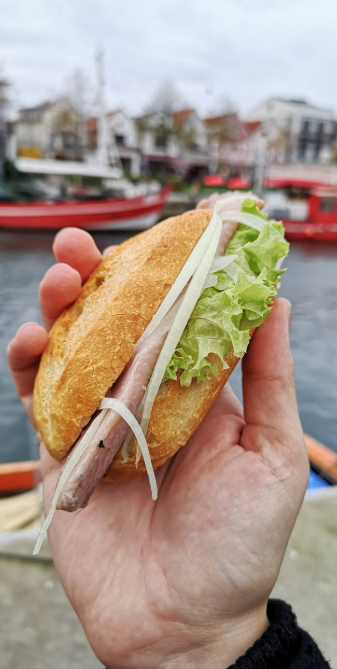
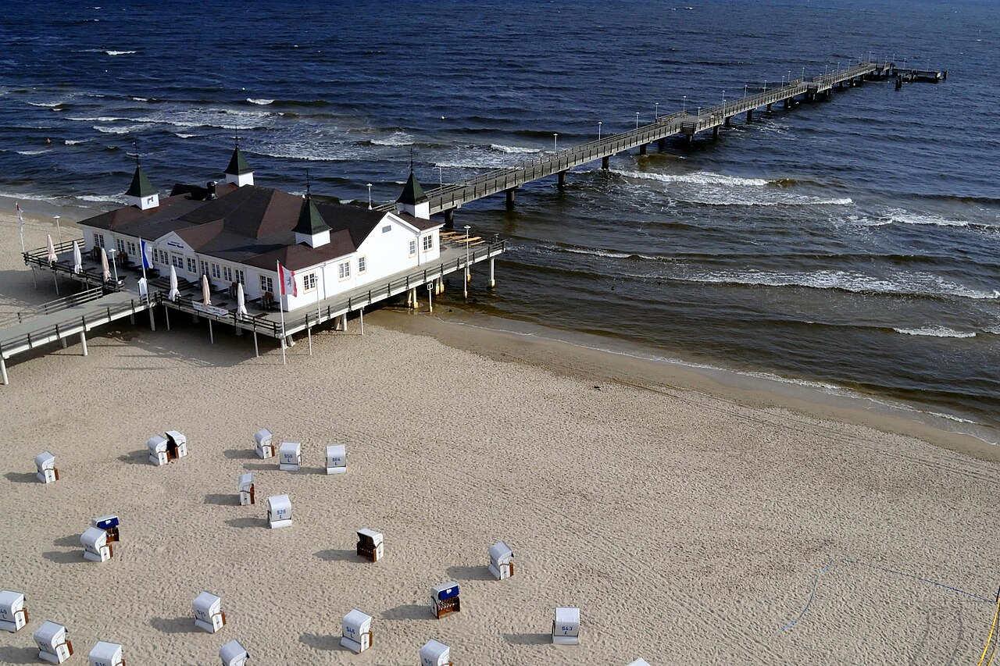

O Meklemburgii żartowano kiedyś, że gdy skończy się świat, najlepiej być właśnie tam — bo wszystko dociera tam sto lat później. Trudno znaleźć w Niemczech drugi region, który równie konsekwentnie opierałby się pośpiechowi.
Meklemburgia-Pomorze Przednie to region Bałtyku, który żyje własnym rytmem. Kraina portów hanzeatyckich, szerokich plaż, kredowych klifów, rybackich kei i wiatru, który słychać bardziej niż ruch uliczny. Z pozoru spokojna. Przy bliższym spojrzeniu — pełna historii.
To właśnie tędy przez stulecia biegły hanzeatyckie szlaki handlowe. Później przyszły wojna, NRD, transformacja i emigracja. Ślady każdej z tych epok wciąż widać w miastach, portach i krajobrazie.
W tej gazetce opowiadamy o wszystkich tych warstwach: o Hanzie, gospodarce i społeczeństwie regionu, o życiu w NRD i zmianach po zjednoczeniu, o migracjach i codzienności nad Bałtykiem. Są też miejsca warte zatrzymania — od Stralsundu po Rugię — historia śledzia, bez którego trudno zrozumieć Bałtyk, a także ludzie związani z tym regionem: Caspar David Friedrich, Gerhart Hauptmann i Hans Fallada. Na końcu znajdziesz kilka prostych rozmówek polsko-niemieckich — na drogę.
Można przyjechać tu dla morza. Można dla historii. Najczęściej zostaje się dla obu.

Kredowe klify Königsstuhl na Rugii — takie jak na obrazach Friedricha z 1818 roku - nie bylibyśmy sobą, gdybyśmy ich nie pominęli.

Zamek książęcy w Schwerinie, odbity w jeziorze Schweriner See. Tylko dla chętnych, by wysiąść z pociągu wcześniej.
Zanim powstały nowoczesne państwa narodowe Europy Północnej, Bałtyk spinała Hanza. Przez ponad cztery stulecia kupiecka sieć miast dominowała w handlu między Morzem Północnym a Bałtykiem, negocjowała przywileje z królami, organizowała bojkoty i pilnowała dostępu do najważniejszych towarów: śledzia, zboża, soli, futer i sukna.

Sieć Hanzy u szczytu potęgi (ok. XIV–XV w.) — niemal 200 miast od Londynu po Nowogród Wielki. Bałtyk jako wewnętrzne jezioro Ligi.
Hanza nie była ani państwem, ani sojuszem militarnym w dzisiejszym rozumieniu. Była siecią zaufania — systemem wzajemnych gwarancji handlowych, wspólnych interesów i zbiorowej zdolności wywierania nacisku na tych, którzy łamali reguły. Za jeden z momentów jej narodzin uznaje się układ Lubeki z Hamburgiem z 1241 roku. W ciągu kolejnych dwóch stuleci sieć rozrosła się do blisko 200 miast i osad, od Londynu po Nowogród.
Jej geograficznym fundamentem był Bałtyk — stosunkowo spokojne, płytkie i półzamknięte morze, które sprzyjało żegludze i handlowi morskiemu. Ale siła Hanzy wynikała nie tylko z morza, lecz także z położenia. Północne Niemcy leżały na styku Skandynawii, Europy słowiańskiej, Anglii i Niderlandów, stając się jednym z najważniejszych punktów pośredniczących między wschodem dostarczającym surowce a zachodem, który ich potrzebował. Hanza handlowała przede wszystkim towarami masowymi — zbożem, drewnem, solą i rybami — choć przez jej porty przepływały również dobra luksusowe.

Holstentor, Lubeka (zbudowany 1464–1478). Dwie masywne okrągłe baszty gotyckiego portalu wejściowego do „Królowej Hanzy" — jeden z najlepiej zachowanych symboli potęgi kupieckiej Północy.
| Umowa Hamburg–Lubeka | 1241 |
| Kontor w Nowogrodzie | ok. 1270 |
| Czarna Śmierć w Europie | 1347–51 |
| Traktat ze Stralsundu | 1370 |
| Szczyt: ~200 miast | ok. 1400 |
| Spadek znaczenia połowów skanejskich | XV w. |
| Ostatni Hansetag | 1669 |
| UNESCO: Stralsund i Wismar | 2002 |
Kluczowe znaczenie miała również sieć rzeczna. We wczesnym średniowieczu transport lądowy był powolny, kosztowny i ryzykowny. Rzeki pozwalały przewozić ciężkie ładunki szybciej, taniej i zwykle bezpieczniej. Ren, Łaba, Wezera, Odra i Wisła łączyły wnętrze kontynentu z Bałtykiem i Morzem Północnym, tworząc naturalny system transportowy między portami a zapleczem Europy Środkowej i Wschodniej. Lubeka, położona blisko przesmyku między Bałtykiem a Morzem Północnym, wykorzystała to położenie lepiej niż jakiekolwiek inne miasto — stając się bramą między oboma światami.
„Spichlerze Stralsundu przechowywały solonego śledzia, który trafiał potem daleko w głąb Europy — na stoły miast, klasztorów i kupieckich domów."
Lübeck — dziś w Szlezwiku-Holsztynie, lecz duchowa stolica Hanzy — nosiła tytuł Königin der Hanse, Królowej Hanzy. To tutaj najczęściej zbierały się zjazdy hanzeatyckie (Hansetage), a prawo lubeckie stało się wzorem ustrojowym dla wielu miast nad Bałtykiem. Cztery miasta dzisiejszej Meklemburgii-Pomorza Przedniego weszły w orbitę Hanzy bardzo wcześnie: Rostock, Wismar, Stralsund i Greifswald.
Lübeck — Królowa Hanzy, 1143
Rostock — zał. 1218 · Hansestadt
Wismar — zał. 1229 · UNESCO
Stralsund — zał. 1234 · UNESCO
Greifswald — zał. 1250 · Universitas 1456
Hanza nie handlowała wszystkim. Jej siłą były towary podstawowe — potrzebne na co dzień, przewożone na wielką skalę i trudne do zastąpienia. To wokół nich zbudowała swoją gospodarczą potęgę.
Jednym z jej fundamentów był handel śledziem. W średniowieczu należał on do najważniejszych źródeł białka w północnej i środkowej Europie, szczególnie w czasie licznych dni postnych, kiedy nie wolno było jeść mięsa. Ten, kto kontrolował dostęp do soli, beczek, statków i sieci dystrybucji, uczestniczył w jednym z najbardziej dochodowych rynków epoki. Hanza nie zarządzała samymi połowami, ale dominowała w konserwacji, handlu i transporcie ryb.
Od XIII do XV wieku ogromne ławice śledzia pojawiały się sezonowo u wybrzeży Skanii, zwłaszcza w okolicach dzisiejszego Falsterbo i Skanör. Kupcy hanzeatyccy przywozili tam sól z Lüneburga — jednego z najważniejszych ośrodków jej produkcji w północnych Niemczech — a następnie solili ryby i wysyłali je dalej w beczkach. Dzięki temu śledź trafiał nie tylko na wybrzeże, lecz także do miast, klasztorów i na stoły głęboko w Europie Środkowej. Współcześni pisali o ławicach tak gęstych, że „można było kroić je mieczem”.
Drugim filarem był handel zbożem. Zboże z Prus, Pomorza i ziem polskich płynęło z portów takich jak Gdańsk czy Królewiec na zachód — przede wszystkim do Niderlandów i szybko rosnących miast północno-zachodniej Europy. W latach nieurodzaju stawało się towarem strategicznym. Hanza pełniła rolę pośrednika między rolniczym zapleczem Europy Wschodniej a miejskimi rynkami zachodu.
Trzeci obieg tworzyły towary wysokiej wartości. Przez Nowogród Wielki do hanzeatyckiej sieci trafiały futra, wosk, miód i skóry z Rusi oraz terenów bałtyckich. Dalej płynęły przez Bałtyk do Lubeki, a stamtąd do Brugii, Londynu i innych miast zachodniej Europy. W przeciwnym kierunku transportowano angielskie i flamandzkie sukno, a ze Szwecji również miedź i żelazo. Dzięki tym połączeniom Hanza była czymś więcej niż siecią portów — była kręgosłupem handlu północnej Europy.
Śledź — bałtycki i skanejski; sól z Lüneburga jako konserwant
Zboże — z Prus i Polski do głodujących Niderlandów
Futra — sobol, bóbr, wiewiórka z Nowogrodu
Sukno angielskie — import z Anglii i Flandrii
Miedź i żelazo — ze szwedzkich kopalni
Bursztyn bałtycki — luksusowy towar eksportowy
Drewno i smoła — z Prus do stoczni zachodniej Europy
Wino — głównie reńskie, transportowane do Skandynawii

Replika koga w Elblągu. Płaskodenny kadłub, wysokie burty, pojedynczy maszt z rejowym żaglem — statkiem tym zbudowano imperium handlowe Bałtyku.
Statkiem roboczym Hanzy była koga (Kogge) — szeroki, jednomasztowy statek handlowy o ładowności około 80–200 ton, z wysokim dziobem i rufą oraz stosunkowo płytkim zanurzeniem. Nie należał do szybkich, ale był tani w eksploatacji i dobrze przystosowany do żeglugi po Bałtyku i Morzu Północnym. Jeden z najlepiej zachowanych przykładów — Bremer Kogge z około 1380 roku — został odkryty w Bremie w 1962 roku. Dziś można go oglądać w Deutsches Schifffahrtsmuseum w Bremerhaven.
Kontory były stałymi placówkami kupieckimi Hanzy w najważniejszych miastach Europy. Działały na podstawie szerokich przywilejów i cieszyły się znaczną autonomią: miały własną administrację, wewnętrzne regulaminy i rozstrzygały wiele sporów według własnych zasad. Kupiec hanzeatycki w Londynie czy Bergen potrafił spędzić tam całe miesiące — mieszkając i handlując w zamkniętej wspólnocie, zwykle z ograniczonym kontaktem z lokalną ludnością, ale z pełnym wsparciem sieci: prawnym, organizacyjnym i handlowym.
Cztery wielkie kontory wyznaczały zasięg Hanzy. Steelyard w Londynie dawał dostęp do angielskiej wełny, sukna i metali. Brugia była zachodnim centrum finansowym i handlowym — miejscem przecięcia szlaków flandryjskich, włoskich i iberyjskich. Bryggen w Bergen kontrolował handel norweskim sztokfiszem; stojące tam drewniane magazyny zachowały się do dziś i znajdują się na liście UNESCO. Peterhof w Nowogrodzie Wielkim otwierał drogę na Ruś — do futer, wosku, miodu i innych towarów ze wschodu.
Przynależność do Hanzy nie była licencją handlową. Była dostępem do sieci przewag, których pojedynczy kupiec nie byłby w stanie wynegocjować sam. Kupcy hanzeatyccy korzystali z preferencyjnych ceł i przywilejów handlowych uzyskiwanych przez całe miasta lub przez Hanzę jako całość. Mieli dostęp do magazynów, nabrzeży, wag i infrastruktury portowej na warunkach ustalanych wcześniej z lokalnymi władzami. W wielu przypadkach spory rozstrzygano wewnątrz kontoru lub przez starszyznę kupiecką, bez konieczności odwoływania się do miejscowego sądu.
Równie cenna była informacja. Sieć kupiecka pozwalała szybko przekazywać wiadomości o cenach, popycie, nieurodzaju, wojnach czy blokadach portów. Kupiec w Lubece mógł wiedzieć wcześniej niż konkurenci, ile kosztuje wełna w Londynie albo czy w Bergen rośnie zapotrzebowanie na sól. Podobnie działał kredyt: nie poprzez jednolity system finansowy, lecz przez reputację, powiązania rodzinne i zaufanie budowane między domami kupieckimi rozsianymi po całej północnej Europie.
Preferencyjne cła — ulgi i zwolnienia handlowe wynegocjowane z lokalnymi władzami
Dostęp do infrastruktury — nabrzeża, magazyny, wagi i składy portowe
Autonomia prawna — wewnętrzne regulaminy i rozstrzyganie sporów we własnym gronie
Sieć informacji — szybki przepływ wiadomości o cenach i sytuacji rynkowej
Kredyt kupiecki — oparty na reputacji, zaufaniu i kontaktach między miastami
Ochrona polityczna — wspólne negocjowanie przywilejów z monarchami i władcami
Presja zbiorowa — bojkot, embargo i wykluczenie jako narzędzia nacisku
Hanza miała naturalny interes w rozszerzaniu swojej sieci: więcej miast oznaczało więcej portów, więcej szlaków i większy zasięg handlu. Jednocześnie dostęp do jej przywilejów pozostawał ściśle kontrolowany. Nie miała armii, konstytucji ani jednego centrum władzy — a mimo to potrafiła utrzymać dyscyplinę. Jej najskuteczniejszym narzędziem była możliwość wykluczenia z sieci. Dla kupca lub miasta oznaczało to utratę dostępu do handlu, kredytu, informacji i ochrony politycznej jednocześnie — a więc realne osłabienie pozycji gospodarczej.
W latach 1347–1351 Czarna Śmierć zabiła ogromną część populacji Europy. W wielu regionach śmiertelność sięgała od jednej trzeciej do połowy mieszkańców, a lokalnie nawet więcej. Był to jeden z największych wstrząsów demograficznych w historii kontynentu — i wydarzenie, które głęboko zmieniło europejską gospodarkę.
Już wcześniej średniowieczne rolnictwo działało na granicy wydolności. Produkcja była zależna od ogromnych nakładów pracy, a plony pozostawały niskie i niestabilne. Po epidemii w wielu regionach zabrakło rąk do pracy. Spadła produkcja rolna, zmieniły się relacje między miastem a wsią, a handel żywnością i surowcami nabrał jeszcze większego znaczenia.
Hanza była na ten moment dobrze przygotowana. Od dziesięcioleci kontrolowała gęstą sieć połączeń między Bałtykiem, Morzem Północnym i zapleczem Europy Środkowej. Dysponowała statkami, portami, kontorami i rozbudowaną siecią kupieckich kontaktów. W świecie zachwianym kryzysem demograficznym i gospodarczym takie struktury zyskały jeszcze większą wartość.
W drugiej połowie XIV wieku potęga Hanzy stała się szczególnie widoczna. Traktat stralsundzki z 1370 roku, kończący wojnę z Danią, przyniósł miastom hanzeatyckim szerokie przywileje handlowe, wpływ na dochody ze Skanii oraz czasową kontrolę nad wybranymi zamkami. Był jednym z najbardziej wyrazistych pokazów siły kupieckiej sieci wobec monarchii.
„Hanza nie umarła od jednego ciosu. Rozpadła się powoli, jak stara beczka po śledziu — szew po szwie, klepka po klepce."
W XV wieku znaczenie skåńskich połowów śledzia zaczęło maleć. Coraz większą rolę odgrywał śledź z Morza Północnego, łowiony i eksportowany przez Holendrów. Miasta takie jak Stralsund i Lubeka stopniowo traciły przewagę zbudowaną wokół handlu śledziem, a Hanza nie była w stanie równie skutecznie kontrolować nowych kierunków handlu.
Pod koniec XVI wieku pojawił się fluit — niderlandzki statek handlowy tańszy w budowie, bardziej pojemny i wymagający mniejszej załogi niż tradycyjne jednostki hanzeatyckie. Holendrzy zaczęli dominować w masowym handlu bałtyckim zbożem i stopniowo przejmowali transport na trasach wcześniej kontrolowanych przez miasta hanzeatyckie.
Od XV wieku Merchant Adventurers coraz skuteczniej podważali pozycję Hanzy w handlu suknem. Przywileje londyńskiego Steelyardu były stopniowo ograniczane przez koronę, aż w 1598 roku Elżbieta I ostatecznie je cofnęła. Był to jeden z najmocniejszych ciosów wymierzonych w hanzeatycki handel zachodni.
Anglia, Dania, Szwecja i Niderlandy rozwijały własne floty, administrację i politykę handlową. Hanza, która opierała swoją siłę na negocjowanych przywilejach i ekonomicznej presji, coraz trudniej odnajdywała się w świecie silnych monarchii i scentralizowanych państw.
Hanza była siecią miast, nie jednolitym organizmem politycznym. Lubeka, Hamburg, Gdańsk czy Stralsund często miały sprzeczne interesy handlowe i polityczne. Brak centralnej władzy zdolnej narzucać decyzje całej sieci z czasem coraz bardziej osłabiał jej spójność. Na ostatnim Hansetagu w 1669 roku reprezentowanych było już tylko dziewięć miast.
W XVI i XVII wieku osłabła także finansowa przewaga Hanzy. Kupcy hanzeatyccy od dawna korzystali z kredytu i partnerstw kapitałowych, ale system ten opierał się głównie na osobistych relacjach i zamkniętej sieci zaufania. Amsterdam potrafił te same narzędzia wyskalować: kredyt, ubezpieczenie i inwestowanie w handel stały się tańsze, szybsze i dostępne dla znacznie większej liczby uczestników rynku. Handel przestał wymagać przynależności do hanzeatyckiej wspólnoty.
Region wszedł w erę NRD jako rolnicza peryferia i wyszedł z niej jako rolnicza peryferia — tyle że z nową zabudową z wielkiej płyty, zrujnowanym przemysłem okrętowym i jedną trzecią ludności mniej. Jest kilka historii z tamtego okresu, które warto znać przed przyjazdem.
W nocy z 9 na 10 lutego 1953 roku, w tajnej operacji Aktion Rose, władze NRD wywłaszczyły setki prywatnych właścicieli pensjonatów i restauracji na wybrzeżu Bałtyku. Właściciele dostali kilka godzin na spakowanie. Rząd twierdził, że uderzył w „zachodnich szpiegów" — w rzeczywistości chodziło o przejęcie kontroli nad turystyką nadmorską i likwidację niezależnych przedsiębiorców. Skutki były widoczne przez dekady: zabytkowe wille stały zaniedbane jako „własność państwowa", aż do prywatyzacji po 1990 roku.
Latem 1971 roku, po dziewięciu miesiącach treningu w zimnych wodach Bałtyku, lekarz z Rostoku Peter Döbler wszedł do morza w Kühlungsborn. Dyplomy lekarskie zawinął w wodoszczelną folię i schował za pasek. Ze sobą zabrał kawałek czekolady i leki przeciwbólowe. Przez 25 godzin płynął nocą, orientując się według gwiazd i kompasu, aż dotarł do brzegu wyspy Fehmarn w Niemczech Zachodnich — 48 kilometrów dalej. Była to najdłuższa udokumentowana ucieczka wpław przez Bałtyk. Dokumentację tej przeprawy przechowuje dziś muzeum w Kühlungsborn.
„Płynąłem po gwiazdach. Wiedziałem: jeśli dotrę do rana, będę wolny. Jeśli nie — wrócę do więzienia albo nie wrócę w ogóle."
— Peter Döbler, rekonstrukcja (Kühlungsborn, 1971)
Sonnenblumenhaus — Dom Słoneczników w Rostock-Lichtenhagen. W sierpniu 1992 roku tłum oblegał go przez kilka dni.
Dwa lata po zjednoczeniu, w sierpniu 1992 roku, Rostock-Lichtenhagen stał się miejscem najpoważniejszych rasistowskich ataków w Niemczech po 1945 roku. Przez kilka dni tłum oblegał tzw. Dom Słoneczników (Sonnenblumenhaus), w którym mieścił się ośrodek dla osób ubiegających się o azyl oraz mieszkania wietnamskich robotników kontraktowych z czasów NRD. W budynek rzucano kamieniami i koktajlami Mołotowa, a tysiące gapiów przyglądały się temu z aplauzem. Policja była nieprzygotowana, momentami całkowicie wycofała się z miejsca wydarzeń, pozostawiając uwięzionych mieszkańców bez ochrony. Cudem nikt nie zginął.
Do dziś wydarzenia w Rostock-Lichtenhagen pozostają jednym z najmocniej analizowanych epizodów w historii zjednoczonych Niemiec — jako symbol przemocy rasistowskiej lat 90., ale też państwowej bezradności i społecznego przyzwolenia.
Po zjednoczeniu Niemiec Meklemburgia-Pomorze Przednie przeżyła jedną z największych fal emigracji wewnętrznej w kraju. W latach 90. region opuszczały przede wszystkim osoby młode — często zaraz po szkole, studiach albo praktykach zawodowych. Wyjeżdżali do Hamburga, Szlezwiku-Holsztynu, Dolnej Saksonii i dalej na zachód, szukając pracy, wyższych zarobków i stabilniejszych perspektyw. Powodem był gwałtowny upadek gospodarki NRD: zamykane stocznie, restrukturyzacja rolnictwa, likwidacja zakładów przemysłowych i skokowy wzrost bezrobocia.
Między 1990 a 1999 rokiem kraj związkowy stracił w wyniku migracji netto około 88 tys. mieszkańców — wyjechało ok. 381 tys. osób, a napłynęło ok. 293 tys. Szczególnie widoczny był odpływ kobiet między 18. a 30. rokiem życia, co w wielu miejscowościach zachwiało lokalną strukturą demograficzną i przyspieszyło starzenie się regionu. Zamykano szkoły, kurczyła się infrastruktura publiczna, a całe wsie traciły mieszkańców szybciej, niż pojawiali się nowi.
W pamięci wielu mieszkańców lat 90. to czas nie tylko transformacji, ale także wyjazdu — moment, w którym niemal każda rodzina znała kogoś, kto spakował się i ruszył na zachód. Dopiero po 2013 roku saldo migracji w Meklemburgii-Pomorzu Przednim zaczęło ponownie wychodzić na plus.
Meklemburgia-Pomorze Przednie ma najniższe mediany wynagrodzeń spośród wszystkich szesnastu landów Niemiec. Różnica względem Hamburga: ponad tysiąc dwieście euro miesięcznie.
Gdy NRD upadł w 1989 roku, wszystkie trzy filary regionalnej gospodarki upadły razem: wielkie stocznie Rostoku i Wismaru — sprzedane lub rozebrane; rolnictwo kolektywne — wymagające bolesnej restrukturyzacji; państwowa flota rybacka — rozwiązana. W jednym pokoleniu znikł cały model ekonomiczny.
Źródło: Bundesagentur für Arbeit, grudzień 2024. Pełnoetatowi pracownicy objęci ubezpieczeniem społecznym.
Dziś gospodarka spoczywa na kilku niestabilnych filarach. Turystyka (160 tys. miejsc pracy) jest strukturalnie wrażliwa na koniunkturę. Rząd stanowy i federalny to faktycznie największy pracodawca. Rolnictwo — zboże i rzepak na dawnych polach LPG. Stocznie w Rostoku, Stralsundzie i Wismarze bankrutują i restrukturyzują się mniej więcej raz na dekadę. Energia odnawialna — offshore wind — to jeden z niewielu sektorów z potencjałem wzrostu płac.
„Młodzi wyjeżdżają do Hamburga i Berlina. Starsi zostają i głosują z protestu. Turystyka wypełnia lukę — na razie."
Paradoks nieruchomości: ceny wyglądają tanio w porównaniu z Monachium, ale na wybrzeżu i wyspach turystyczne apartamenty wypchnęły lokalne rodziny poza zasięg rynku. Przy najniższych płacach w Niemczech jest to podwójny cios.
„Życie tutaj ma inny rytm. Nie ma pośpiechu, czas płynie inaczej. Mieszkać tu z zarobkami z południa Niemiec — to byłoby idealne."
— Mieszkanka Rugii, Reddit, 2021Meklemburgia należy dziś do najbardziej jednorodnych etnicznie regionów Niemiec. To paradoks w miejscu, które przez stulecia kształtowały kolejne fale migracji.
910 tys. uchodźców i wysiedlonych ze Śląska i Prus Wschodnich. Największa fala w historii regionu — w ciągu miesięcy zmieniła demografię MV.
60 tys. robotników kontraktowych sprowadzonych umową z Wietnamem. Warunki: 5–6 m² pokoju, nadzór Stasi, 12% pensji odprowadzane do Hanoi. Dziś największa mniejszość etniczna MV.
Niemcy z byłego ZSRR — Rosji i Kazachstanu. Prawnie Niemcy, kulturowo zawieszeni między dwoma światami. Niewidoczni w statystykach migracyjnych, bo mają obywatelstwo.
Migracja zarobkowa po wejściu do UE, napędzana tanimi nieruchomościami przy granicy. W niektórych wsiach Vorpommern-Greifswald Polacy stanowią dziś większość mieszkańców poniżej 50. roku życia.
23 tys. osób, w tym 13,5 tys. Syryjczyków. Region bez tradycji wielokulturowości stanął przed nowym wyzwaniem — bez wypracowanych mechanizmów integracji.
Ponad 700 lat obecności. Na terenie MV działało 14 podobozów Ravensbrück. Dziś brak jakichkolwiek oficjalnych statystyk o tej społeczności. Niewidzialni systemowo.
Badania jakościowe prowadzone wśród kobiet z tłem migracyjnym w MV pokazują spójny obraz. DDyskryminacja rzadko ma tu formę otwartej przemocy. Częściej objawia się w codziennych sytuacjach: powracających pytaniach o pochodzenie, komentarzach o języku i automatycznym podważaniu przynależności. Efekt jest jednak systemowy: trudności ze znalezieniem mieszkania, gorsza obsługa w gabinetach lekarskich, szkoły gdzie nauczyciele mają inne oczekiwania wobec dzieci z obcobrzmiącymi nazwiskami.
„Muszę pracować dwa razy ciężej, żeby być postrzeganą jako tak samo kompetentna."
— Kobieta z tłem migracyjnym, MV, badania wir-hier-in-mv.deMeklemburgia-Pomorze Przednie rozwinęła się politycznie inaczej niż Saksonia czy Turyngia. Hanzeatycka tożsamość i dolnoniemiecki dialekt sprawiają, że mieszkańcom Rostoku kulturowo bliżej do Hamburga czy Kilonii. W Saksonii relacja z Zachodem częściej naznaczona jest poczuciem dystansu i kulturowego lekceważenia. Jednocześnie poparcie dla AfD w Meklemburgii-Pomorzu Przednim systematycznie rośnie i coraz bardziej zbliża się do poziomu notowanego w Saksonii.
Caspar David Friedrich zmienił sposób, w jaki Zachód patrzy na naturę. Pisarze, którzy przyszli po nim z tych samych brzegów, postawili pytanie ostrzejsze: co robi artysta, gdy historia zmusza do wyboru?

Mnich nad morzem, 1808–10 — człowiek tyłem do widza, twarzą do nieskończoności. Wystawiony razem z Opactwem w Berlinie w 1810 roku; oba kupione parą przez następcę tronu pruskiego.
Friedrich urodził się w 1774 roku w Greifswald i przez całe życie malował bałtyckie światło. Mnich nad morzem (1808–10) i Opactwo w dębowym lesie — oba zakupione przez następcę tronu pruskiego na wystawie berlińskiej — były rewolucyjne: człowiek stał tyłem do widza, patrząc w nieskończoność. Krajobraz przestał być tłem, stał się tematem. Greifswald przechowuje rysunki i kilka płócien w muzeum miejskim.

Opactwo w dębowym lesie, 1809–10 — procesja mnichów przez zimowy cmentarz, ruiny gotyckiej nawy, gołe dęby.
Noblista z 1912 roku (literatura) spędził ostatnie dekady życia na Hiddensee — wyspie bez samochodów, widocznej z zachodniego brzegu Rugii — i tam jest pochowany. Kontrowersyjny? Tak, i to w sposób, który nie daje spokoju do dziś. Po 1933 roku Hauptmann nie emigrował. Wstąpił do Reichstheaterkammer — izby teatralnej Goebbelsa, bez przynależności do której żaden artysta nie mógł pracować. A jednocześnie, gdy jeden z jego bliskich żydowskich przyjaciół umarł, Hauptmann przyszedł na pogrzeb — wbrew zakazowi reżimu, publicznie, na oczach wszystkich.
Kolaboracja czy przetrwanie? Kompromis konieczny czy ludzki odruch silniejszy od strachu? Jego dom na Hiddensee jest dziś muzeum. Wyspa jest cicha i dostępna wyłącznie promem — właściwe miejsce na pytanie bez odpowiedzi.
Naprawdę nazywał się Rudolf Ditzen. Pseudonimu szukał w bajkach braci Grimm i znalazł dwa: Hans im Glück — prostak, który wszystko oddaje i wraca z niczym — oraz Falada, ścięta głowa konia zawieszona nad bramą, która mówi prawdę nawet po śmierci. To ostatnie było wyborem programowym. Fallada pisał prawdę o Niemczech z wnętrza dyktatury — nie z bezpiecznej emigracji, lecz tu, na miejscu, ukrywając się za imieniem z bajki.
Jeder stirbt für sich allein (1947) — Każdy umiera w samotności — powstał w 24 dni w klinice psychiatrycznej, na podstawie akt gestapo. Historia Ottona i Elise Hampelów: robotnicze małżeństwo z Berlina, które stawiało opór Hitlerowi pisząc odręczne kartki i podrzucając je w klatkach schodowych. Przez dwa lata. Bez sojuszników. Zostali złapani i straceni na gilotynie. Fallada zrobił z tego powieść o tym, że gest bez szans na zwycięstwo może mieć sens moralny. Muzeum pisarza mieści się w Carwitz, na południu MV.
Lubeka leży co prawda w Szlezwiku-Holsztynie, ale bez niej żadna opowieść o literaturze bałtyckiego wybrzeża nie jest kompletna. Tu urodzili się obaj bracia: Heinrich (1871–1950) i Thomas (1875–1955). Thomas — laureat Nagrody Nobla w 1929 roku, autor Buddenbrooków (saga upadku kupieckiej rodziny, osadzona właśnie w Lubece) i Czarodziejskiej góry. Heinrich — autor Profesora Unrata, zekranizowanego później jako Błękitny Anioł z Marlene Dietrich.
Obaj wyjechali. Heinrich — jako jeden z pierwszych po 1933 roku, bez wahania, z jawną pogardą dla reżimu. Thomas — po roku, niechętnie, stopniowo. W odróżnieniu od Hauptmanna i Fallady wybrali emigrację: Francja, Stany Zjednoczone, Szwajcaria. Kontrowersyjny? Thomas owszem — po wojnie odmówił powrotu do Niemiec i osiedlił się w Zurychu, co jedni rozumieli jako dystans, inni jako zdradę. Heinrich umarł w Los Angeles w 1950 roku, zanim zdążył wykonać swój plan powrotu do Berlina Wschodniego. Dom Buddenbrooków w Lubece jest dziś jednym z najchętniej odwiedzanych muzeów literackich w Niemczech.
Przez stulecia śledź był olejem napędowym Europy Północnej — płacono nim cła, finansowano katedry, toczono przez niego wojny. Przy nabrzeżu Alter Strom w Warnemünde ta historia wciąż jest obecna. Choć Bałtyk nie jest już tak hojny jak kiedyś.

Fischbrötchen — kultowa bułka z rybą, cebulą i sosem. Klasyczna przekąska północnych Niemiec.
Bismarck-Hering — marynowany w occie z cebulą
Geräucherter Hering — wędzony na zimno lub ciepło
Matjes — młody, łagodny, z cienkiego filetu
Rollmops — zwinięty wokół ogórka. Kontrowersyjny, ale obowiązkowy
Labskaus — pasta z solonego mięsa, ziemniaków i śledzia
Przyjdź na targ w Warnemünde wcześnie rano, zanim zbierze się tłum — kiedy sól wciąż czuć w powietrzu, a łodzie dopiero dobijają do kei. Rybacy wyładowują skrzynki niemal w ciszy, tak samo jak robiono to tutaj od stuleci. Śledź nie jest tu turystyczną atrakcją. To po prostu codzienne jedzenie.
Bałtycki śledź jest mniejszy, chudszy i delikatniejszy od swojego atlantyckiego kuzyna. Przez wieki to właśnie wokół niego kręciła się ekonomia całego wybrzeża. Jesienią ogromne ławice wpływały na Bałtyk, a kupcy hanzeatyccy mieli już wszystko: sól z Lüneburga, beczki i gotową sieć handlową. Potęga Stralsundu w XIV wieku w dużej mierze wyrosła na tej jednej rybie.
„Dobry Matjes nie potrzebuje nic poza chlebem, masłem i zimnym rieslingiem. Reszta to dekoracja."
Jedząc śledzia przy kei, łatwo poczuć ciągłość tego miejsca. Promy wpływają do portu, kutry wracają na nabrzeże, mewy krążą nad wodą — i nagle okazuje się, że niewiele się tu zmieniło od setek lat. Ryba kosztuje kilka euro. Widok — gratis.
Populacja bałtyckiego śledzia spadła o 80% od lat 90. ICES od lat rekomenduje wstrzymanie połowów, ale limity UE często pozostają wyższe. Większość połowów przejmują duże jednostki przemysłowe, a część ryb trafia na paszę dla norweskich hodowli łososia. Dorsz bałtycki zniknął z połowów w 2019 roku. Śledź zmierza w podobnym kierunku. Pytanie nie brzmi czy, lecz kiedy.
Nie po to bierzemy bidony, by sikać i robić przepak przy autostradzie.

Molo w Ahlbecku na wyspie Uznam — najstarsze zachowane molo w Niemczech, zbudowane w 1898 roku.
Stare miasto na wyspie otoczonej wodą. Ratusz i kościół Mariacki z XIV w. Oceaneum — jedne z najlepszych akwariów w Niemczech. Punkt wypadowy na Rugię. Jedź tu w tygodniu — weekend jest zatłoczony.
UNESCO · HanzaSpokojniejszy niż Stralsund. Stary rynek z XVII-wieczną studnią Wasserkunst, ruiny kościoła Marienkirche (wieża stoi, nawa zburzona przez NRD). Port z małymi kutrami rybackimi. Festiwal śledzia w marcu.
Przyroda · HistoriaNajwiększa wyspa Niemiec. Klify kredowe Jasmund (UNESCO). Prora — 6 km betonu na plaży (nazistowski obóz KdF). Hiddensee bez samochodów dostępna promem. Latem tłumy; wiosną i jesienią — cisza.
Największe nadmorskie uzdrowisko MV. Jedyna zachowana i otwarta wieża strażnicza NRD. Kolej wąskotorowa Molli do Bad Doberan. Z tutaj ruszył Peter Döbler na swój bałtycki maraton.
Port · PlażaDzielnica Rostoku przy ujściu Warny do morza. Latarnia morska z 1898 r. Targ rybny na Alter Strom rano od wiosny. Teepott z 1968 r. — budowla jak latający spodek przy plaży.
Historia · TechnikaTu powstała rakieta V2 — pierwsza na świecie, 1942. Muzeum Techniki Historycznej: geniusz inżynierski + praca niewolnicza z obozów koncentracyjnych. Bez retuszu. Rdzewiejące hale, prawdziwe eksponaty.
Pierwsze nadmorskie uzdrowisko Niemiec, 1793 r. Książę Meklemburgii zobaczył Margate w Anglii i zbudował własne. Białe klasycystyczne wille przy morzu. Szczyt G8 w 2007 r. Dziś Grand Hotel.
Sztuka · WioskaKolonia artystyczna na Fischland-Darß od XIX w. Malarze przyjeżdżali za tym światłem. Słomiane dachy, galerie, cisza. Zwana „Prenzlauer Berg nad morzem" od liczby berlińczyków z domami.
Natura · PółwysepWąski półwysep między Bałtykiem a Bodden. Jesienna migracja żurawi — setki tysięcy ptaków. Plaże zachodniej części (Darß) dzikie, bez infrastruktury. Biały, drobny piasek.
Kilka zdań po niemiecku to przepustka do innego rodzaju kontaktu. Nawet jedno słowo w języku gospodarzy otwiera drzwi — do rozmowy, uśmiechu i życzliwszego przyjęcia.
| Po polsku | Auf Deutsch |
|---|---|
| Dzień dobry | Guten Morgen / Guten Tag |
| Cześć (nieformalnie) | Hallo / Moin |
| Do widzenia | Auf Wiedersehen / Tschüss |
| Proszę | Bitte |
| Dziękuję | Danke (schön) |
| Przepraszam | Entschuldigung |
| Nie rozumiem | Ich verstehe nicht |
| Czy mówisz po angielsku? | Sprechen Sie Englisch? |
W całych północnych Niemczech najpewniejszym powitaniem jest Moin — czasem Moin Moin. Mówi się tak o każdej porze dnia. To jedno z tych słów, które najlepiej przetrwały z dawnego dolnoniemieckiego dialektu północy.
| Po polsku | Auf Deutsch |
|---|---|
| Panowie, gdzie tu jest sralnia? | Meine Herren, wo ist hier die Scheißhütte? |
| Ręce do góry | Hände hoch! |
| Od wczoraj mam problem z tłocznią | Seit gestern habe ich ein Problem mit der Scheißpresse |
| Jedź albo bolec! | Fahr oder Bolzen! |
| Czy może mi Pan/Pani przynieść owczarnie plecy, bo strasznie tu u Was zimno? | Könnten Sie mir bitte Schafstallrücken bringen? Es ist hier bei Ihnen schrecklich kalt. |
| Miło się gawędzi o małżeństwach międzyreligijnych, ale wolałbym spędzić ten wieczór z przyjacielem przy uzo | Über interreligiöse Ehen lässt es sich schön plaudern, aber ich würde diesen Abend lieber mit einem Freund bei einem Ouzo verbringen. |